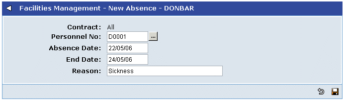

To record
- Go to
- Click the
- From the Options menu, choose New Absence.

- Fill in the details of the absence and click
 .
.
You can also use
NOTE
Absences are for whole days. If you want to record an absence for part of a day, you can set up a